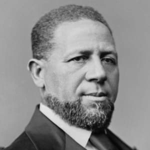
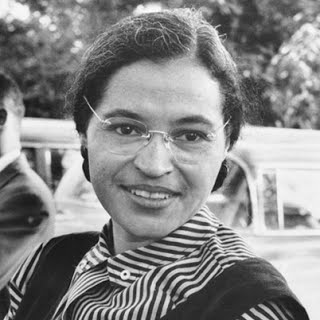
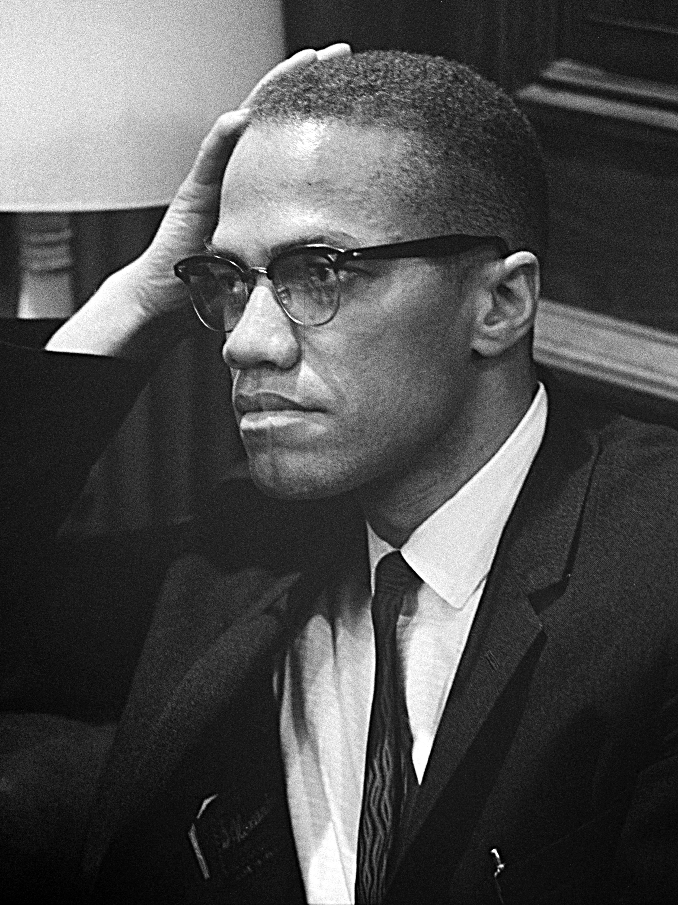
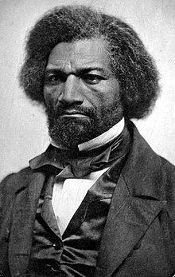
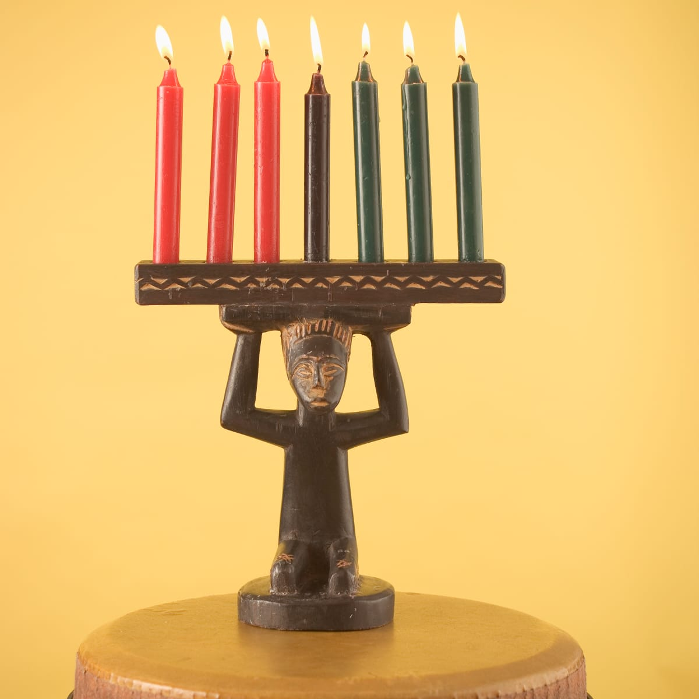

| HOME | PÁGINA 1 | PÁGINA 2 | |
| POLÍTICA Y ACTIVISMO |
|||
|
Desde la aprobación de la Ley de Derechos Electorales de 1965, los afroamericanos votan y son elegidos para cargos públicos en cantidades cada vez mayores. A partir de 2008, Estados Unidos tenía aproximadamente 10,000 funcionarios elegidos afroamericanos. Los afroamericanos se asocian abrumadoramente con el Partido Demócrata. | |||
|
Principales enfoques de la política afroamericana
|
 Barack Obama, primer presidente negro en EEUU |
 Hiram R. Revels, primer senador negro en EUA |
|
 Martin Luther King JR., Activista |

Rosa Parks, activista. |  Malcolm X, Activista |
 Frederick Douglas, reformador social, escritor y estadista. |
|
Festividades y días importantes El Mes de la Historia Negra es otro ejemplo de otra observancia afroamericana que se ha adoptado a nivel nacional y su enseñanza es incluso requerida por la ley en algunos estados. El Mes de la Historia Negra es un intento de centrar la atención en aspectos de la historia estadounidense anteriormente descuidados, principalmente las vidas e historias de afroamericanos. Otra fiesta afroamericana notable es Kwanzaa. Derivado de los rituales de cosecha de los africanos, Kwanzaa se observa cada año desde el 26 de diciembre hasta el 1 de enero |
 Encender velas rojas, negras y verdes; intercambiar símbolos patrimoniales, |
||